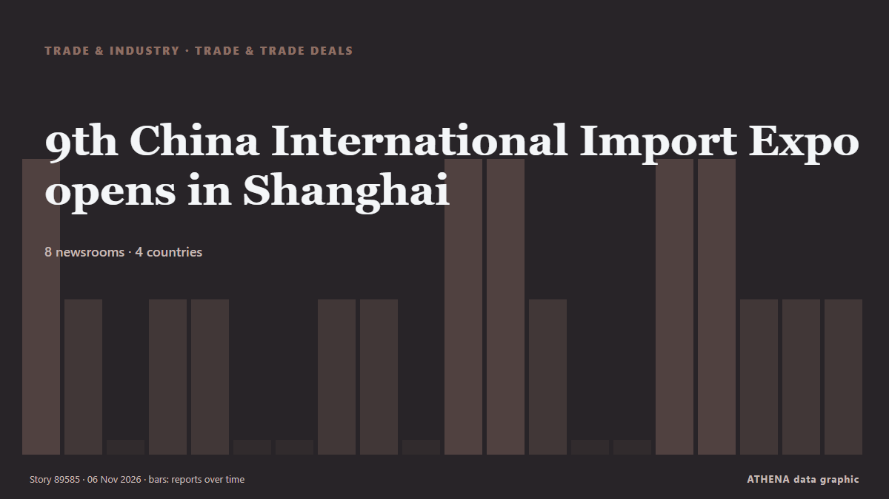

Торговля и соглашения
СпонсорПри поддержке  Cybernetics and Artificial Intelligence Lab Welcome to the Cybernetics and Artificial Intelligence Laboratory, established at the Department of Business Administration of the National and Kapodistrian University of Athens. The lab is headed by Professor Dimitrios Thomakos. The lab aims to do research that can be published in top venues. Our research uses tools and methods of Artificial Intelligence, and lies in the following areas: - Forecasting - Decision making - Cyber security - Finance We are always looking forward to collaborating with exceptional students!
Cybernetics and Artificial Intelligence Lab Welcome to the Cybernetics and Artificial Intelligence Laboratory, established at the Department of Business Administration of the National and Kapodistrian University of Athens. The lab is headed by Professor Dimitrios Thomakos. The lab aims to do research that can be published in top venues. Our research uses tools and methods of Artificial Intelligence, and lies in the following areas: - Forecasting - Decision making - Cyber security - Finance We are always looking forward to collaborating with exceptional students!
| 25 окт. | 0 |
|---|---|
| 26 окт. | 0 |
| 27 окт. | 0 |
| 28 окт. | 0 |
| 29 окт. | 0 |
| 30 окт. | 0 |
| 31 окт. | 0 |
| 1 нояб. | 2 |
| 2 нояб. | 2 |
| 3 нояб. | 5 |
| 4 нояб. | 6 |
| 5 нояб. | 3 |
| 6 нояб. | 2 |
| 7 нояб. | 0 |
Заголовки приводятся на английском языке, как они были опубликованы.

9th China International Import Expo opens in Shanghai
The 9th China International Import Expo (CIIE), the world's first national-level exhibition dedicated to imports, opened on Thursday in Shanghai, drawing thousands of international companies seeking… из CGTN (World)
Long-term financing: PM orders removal of 80pc export requirement for SMEs
ISLAMABAD: In a move aimed at improving access to credit for small and medium-sized enterprises (SMEs) and boosting exports, Prime Minister Shehbaz Sharif on Thursday ordered the removal of the 80… из Business Recorder
Transpacific the most profitable container trade by far, says Alphaliner
Carriers are earning up to $1.30 per nautical mile on spot shipments from China to the US west coast, making the transpacific by far the most lucrative major container trade. из The Loadstar
US Trade Deficit Contracts Slightly in September
In September, U.S. imports rose by 1.2% to $426.6 billion, driven by computers and their accessories. из IndustryWeek
China's Canton Fair draws record overseas buyers in 70th year
Three weeks of deals, demos and dazzling new gadgets are wrapping up in China's Guangzhou. из CGTN (China)
SA can navigate loss of AGOA trade benefits: Tau
The US has announced its intention to suspend South Africa and Rwanda from AGOA. из SABC News
King stops short of offering formal apology over transatlantic slave trade
In his address to presidents and prime ministers of the Commonwealth Charles said the transatlantic slave trade fills his heart with horror. из Evening Standard (London)
Britain Set to Apologize for Role in Trans-Atlantic Slave Trade
The U.K., which played major role in trans-Atlantic slave trade but also ended it, says it won’t pay reparations. из To Vima (English)
H.E. Ahmed Al-Khateeb, Saudi Minister of Tourism, Inaugurates Saudi Land at WTM London 2026, Reinforcing Saudi’s Commitment to Global Travel Trade
37 Saudi tourism partners connect with international travel buyers to showcase new destinations, experiences and opportunities for winter and beyond. из Laotian Times
South Africa: Exclusion from AGOA does not mean end of trade with US
Experts say only about 10 per cent of South Africa’s exports to the US are currently subject to AGOA, representing about 1 per cent of it total global exports. из Africanews (English)
Pakistan eyes Saudi Arabia, Oman for LPG imports amid supply crisis
ISLAMABAD: Pakistan is looking to Saudi Arabia and Oman as potential suppliers of liquefied petroleum gas under government-to-government and commercial deals to ease shortages and curb soaring prices… из Arab News
Iran, Pakistan ministers stress facilitating goods transit, expanding trade cooperation
Iran’s Minister of Economic Affairs and Finance and Pakistan’s Minister of Commerce, on the sidelines of the 42nd session of the Standing Committee for Economic and Commercial Cooperation of the… из Tehran Times
OMS Group Secures $1.03B Financing to Expand Subsea Cable-Laying Fleet
Singapore-based OMS Group has secured $1.0315 billion in corporate and export credit agency-backed financing facilities, supporting a fleet expansion that includes four new fibre-optic cable-laying… из MarineLink
Coal shipments to India drop 7%
'Between January and October, coal shipments to India dropped 7% y/y due to the increased cost of imports. из Maritime Professional
Pakistan Lost $40 Billion Since Trade With India Was Halted: Report
Pakistan's pharmaceutical industry relied on raw materials available in India, he said, adding that its imports from the neighbouring country could generate annual savings of USD 2 billion to USD 3… из NDTV